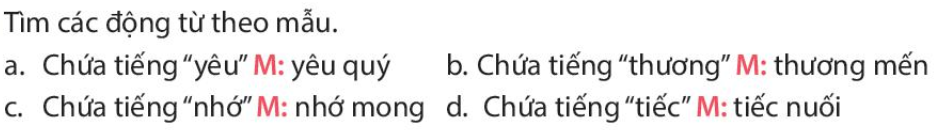

TIẾNG VIỆT TUẦN 7
(Thời gian áp dụng ……………… đến ………………)
LUYỆN TỪ VÀ CÂU: LUYỆN TẬP VỀ ĐỘNG TỪ
I. YÊU CẦU CẦN ĐẠT.
1. Năng lực đặc thù: Phát triển năng lực ngôn ngữ và các kĩ năng đọc, viết, nói và nghe qua các bài thực hành:
- Luyện tập về động từ, nhận diện một số động từ theo đặc điểm về nghĩa.
- HS hiểu hơn về nhóm động từ chỉ trạng thái.
2. Năng lực chung.
- Năng lực tự chủ, tự học: Tích cực học tập, tiếp thu kiến thức để thực hiện tốt nội dung bài học.
- Năng lực giải quyết vấn đề và sáng tạo: Nâng cao kĩ năng tìm hiểu đặc điểm về nghĩa của các động từ vận dụng bài đọc vào thực tiễn.
- Năng lực giao tiếp và hợp tác: Phát triển năng lực giao tiếp trong trò chơi và hoạt động nhóm.
3. Phẩm chất.
- Phẩm chất nhân ái: Thông qua bài học, biết yêu quý bạn bè và đoàn kết trong học tập.
- Phẩm chất chăm chỉ: Có ý thức tự giác trong học tập, trò chơi và vận dụng.
- Phẩm chất trách nhiệm: Biết giữ trật tự, lắng nghe và học tập nghiêm túc.
II. ĐỒ DÙNG DẠY HỌC.
- Kế hoạch bài dạy, bài giảng Power point.
- SGK và các thiết bị, học liệu phục vụ cho tiết dạy.
III. HOẠT ĐỘNG DẠY HỌC.
Hoạt động của giáo viên | Hoạt động của học sinh | |
1. Khởi động:
| ||
- GV tổ chức trò chơi để khởi động bài học. + Câu 1: Dưới đây là hoạt động mà một bạn gái thường làm ở nhà, con hãy nêu các động từ chỉ hoạt động ấy: Đánh răng, rửa mặt, quét nhà, nhặt rau, tưới cây, nấu cơm, làm bài tập, xem ti vi, đọc truyện + Câu 2: Gạch chân dưới động từ trong các từ in nghiêng ở cặp câu dưới đây: a. Cô ấy đang suy nghĩ b. Những suy nghĩ của cô ấy rất sâu sắc. + Câu 3: Dưới đây là hoạt động mà một bạn gái thường làm ở trường, con hãy bấm chọn vào những động từ chỉ hoạt động ấy: Chào cờ, nghe giảng, lau bảng, phát biểu ý kiến, đọc sách, học bài, làm bài tập, chăm sóc bồn hoa. - GV Nhận xét, tuyên dương. - GV dựa vào trò chơi để khởi động vào bài mới. | - HS tham gia trò chơi + Trả lời: Đánh, rửa, quét, nhặt, tưới, nấu, làm, xem, đọc
+ Trả lời: a. Cô ấy đang suy nghĩ
+ Trả lời: Chào, nghe, lau, phát biểu, đọc, học, làm, chăm sóc.
- HS lắng nghe. - Học sinh thực hiện. | |
2. Luyện tập.
| ||
Bài 1: Tìm các động từ theo mẫu - GV mời 1 HS đọc yêu cầu và nội dung: 
- GV mời HS làm việc theo nhóm đôi - GV mời các nhóm trình bày. - Mời các nhóm khác nhận xét, bổ sung.
- GV nhận xét kết luận và tuyên dương. Bài 2. Trò chơi “Hái hoa”. - GV nêu cách chơi và luật chơi. - Gv chiếu bài tập - GV tổ chức cho HS lên hái hoa, mỗi bông hoa gắn 1 con số thứ tự. Hái bông hoa số nào thì tìm động từ thể hiện tình cảm, cảm xúc thay cho bông hoa
- GV nhận xét, tuyên dương các nhóm. |
- 1 HS đọc yêu cầu bài 1. Cả lớp lắng nghe bạn đọc.
- Nhóm đôi thảo luận - Đại diện nhóm trình bày + yêu thương, yêu mến, kính yêu, yêu thích, thương yêu, yêu quý... + nhớ thương, nhớ mong, nhớ nhung...
- HS làm việc nhóm, đọc suy nghĩ - HS lắng nghe cách chơi và luật chơi. - Các nhóm tham gia chơi theo yêu cầu của giáo viên. Thứ tự cần tìm các động từ: nhớ, thương, khâm phục, biết ơn, chán, dỗi, thích, yêu - Các nhóm lắng nghe, rút kinh nghiệm. | |
Bài 3. Sử dụng động từ dưới đây để đặt câu phù hợp. - GV mời HS đọc yêu cầu của bài. - GV mời HS làm việc theo nhóm 4
- GV mời các nhóm trình bày. - GV mời các nhóm nhận xét bình chọn những câu hay nhất cho mỗi tranh - GV nhận xét, tuyên dương |
- 1 HS đọc yêu cầu bài tập 3. - Các nhóm tiến hành cá nhân quan sát tranh, chọn từ phù hợp với trạng thái của người trong tranh để đặt câu viết ào vở sau đó đọc trước nhóm. - Các nhóm trình bày kết quả thảo luận. - Hs bình chọn
- Nghe, rút kinh nghiệm | |
3. Vận dụng trải nghiệm.
| ||
- GV tổ chức vận dụng bằng trò chơi “Ai nhanh – Ai đúng”. + GV chuẩn bị một số từ ngữ trong đó động từ chỉ các mức độ khác nhau, tìm ra những động từ chỉ trạng thái. + Chia lớp thành 2 nhóm, của một số đại diện tham gia (nhất là những em còn yếu) + Yêu cầu các nhóm cùng nhau tìm những từ ngữ nào là tìm ra những động từ chỉ trạng thái. có trong hộp đưa lên dán trên bảng. Đội nào tìm được nhiều hơn sẽ thắng cuộc. - Nhận xét, tuyên dương. (có thể trao quà, …) - GV nhận xét tiết dạy. - Dặn dò bài về nhà. | - HS tham gia để vận dụng kiến thức đã học vào thực tiễn.
- Các nhóm tham gia trò chơi vận dụng.
- HS lắng nghe, rút kinh nghiệm. | |
IV. ĐIỀU CHỈNH SAU BÀI DẠY: Bài tập 1 có thể tổ chức trò chơi tiếp sức cho lớp học sôi động hơn | ||